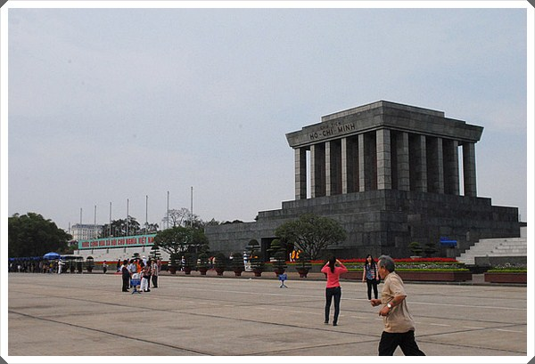
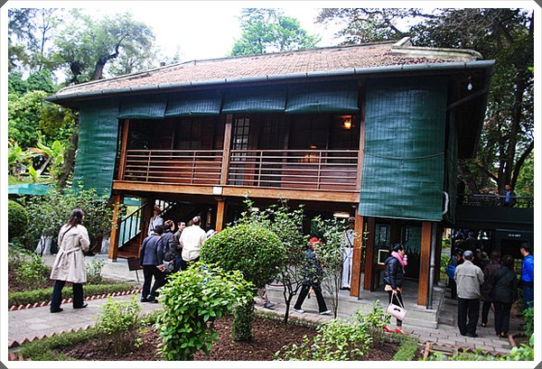
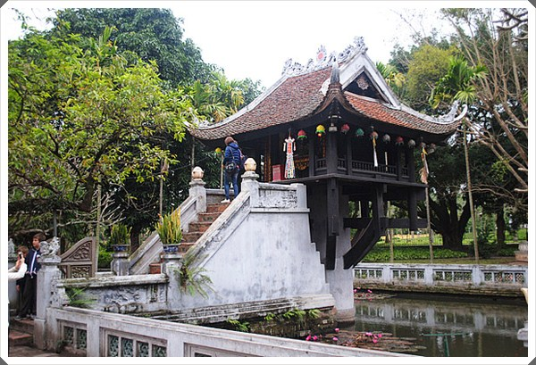
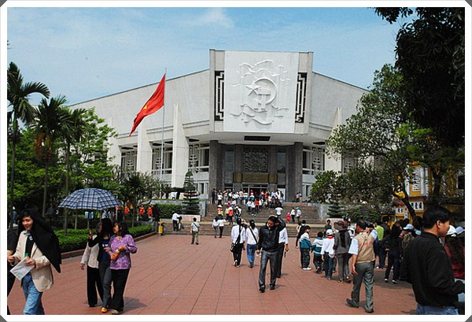
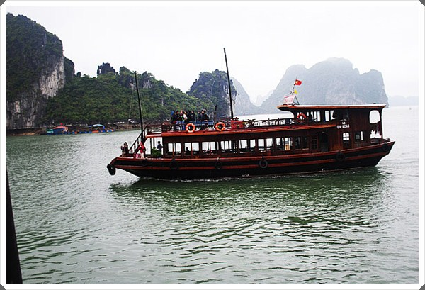
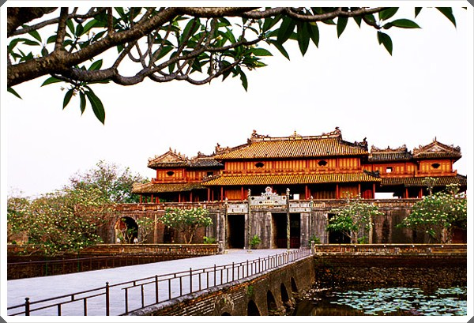
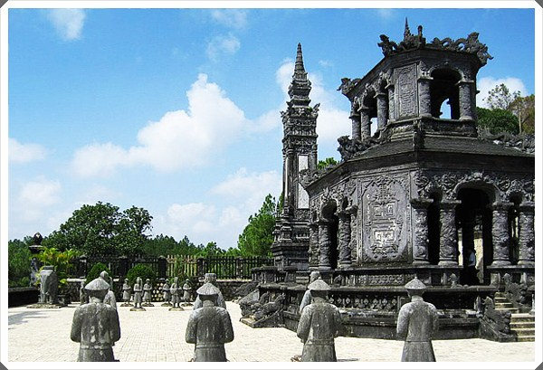
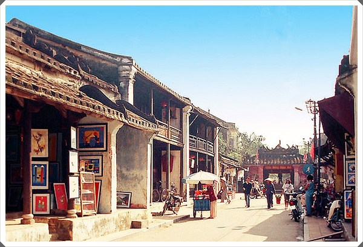

แนะนำสถานที่ท่องเที่ยว
สุสานโฮจิมินห์

เป็นสถานท่องเที่ยวหลักที่นักท่องเที่ยวสนใจเข้าชมกันมากเป็นอาคารสุสานที่เก็บร่างของอดีตประธานาธิบดี
โฮจิมินห์ ซึ่งทางการเวียดนามได้ทำการตกแต่งบำรุงรักษาให้อยู่ในสภาพที่ดีและน่าชมเป็นอย่างยิ่ง
บ้านพักประธานาธิบดีโฮจิมินห์

บ้านไม้ 2 ชั้นแบบใต้ถุนสูง ซึ่งจะเป็นทั้งที่ทำงาน รับแขก และ พักผ่อน ตัวบ้านยังคงได้รับการรักษาไว้เหมือนเพิ่งทำการสร้างเสร็จใหม่
วัดเจดีย์เสาเดี่ยว

วัดที่สร้างถวายแด่เจ้าแม่กวนอิมโดยมีตำนานที่เล่าขานว่ากษัตริย์ของเวียดนามพระองค์หนึ่งต้องการมีพระโอรสแต่ก็ไม่สามารถมีได้ คืนหนึ่งทรงสุบินเห็นเจ้าแม่กวนอิม และหลังจากนั้นพระองค์ได้พระโอรสสมใจ จึงได้สร้างวัดนี้ถวายแด่เจ้าแม่กวนอิมดังกล่าว
พิพิธภัณฑ์โฮจิมินห์

เป็นอาคารที่สร้างขึ้นเพื่อเป็นเกียรติแก่อดีตประธานาธิบดีโฮจิมนห์ภายในอาคารมีรูปปั้นและชีวประวัติ
สิ่งของต่างๆที่เกี่ยวข้องกับประธานาธิบดี ตั้งแต่เยาวัยจนถึงการกอบกู้เอกราชให้กับประเทศเวียดนาม
ฮาลองเบย์

และพักค้างคืนในทะเล
พระราชวังเว้

“นครต้องห้าม” สถานที่ที่จักรพรรดิเบ๋าได่ทำการมอบตราพระราชลัญจกร อันเปรียบเสมือนสัญลักษณ์แห่ง
พระราชอำนาจให้กับรัฐบาลสังคมนิยมเวียดนาม
สุสานจักรพรรดิไคดินห์

จักรพรรดิ์ไดคินห์ เป็นจักรพรรดิ์องค์ที่ 12องค์สุดท้ายของราชวงศ์เหงียน หลังจากมีการขึ้นภาษีที่เรียกเก็บ
จากราษฏร ซึ่งส่วนใหญ่ยังยากจน และนำเงินส่วนหนึ่งของภาษีที่เก็บได้ ไปสร้างสุสานให้กับตนเอง
ขณะที่ยังมีชีวิต เป็นเหตุให้ประชาชนไม่พอใจและเป็นที่มาของการสิ้นสุดราชวงค์เหงียน
ฮอยอัน

นักธุรกิจที่มาค้าขาย เข้ามาตั้งร้านค้าอยู่ในเมืองนี้ และปัจจุบันยังคงเห็นตึกอาคารรูปทรงของชาติต่างๆ เช่น จีน ญี่ปุ่น อินเดีย ฝรั่งเศส เป็นต้นและย่านการค้าเก่าแก่นี้ได้ขี้นทะเบียนเป็นเมืองมรดกโลกเมื่อปี พ.ศ. 2542
ทำให้มีนักท่องเที่ยวเดินทางเข้ามามากขึ้น